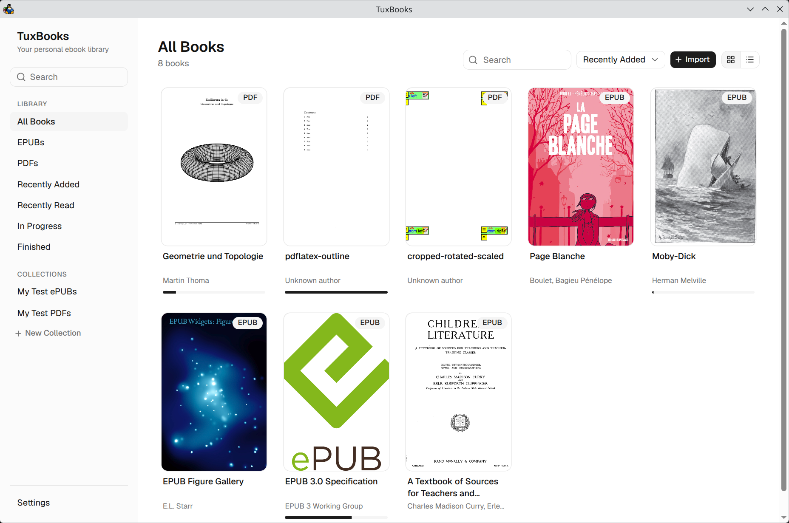
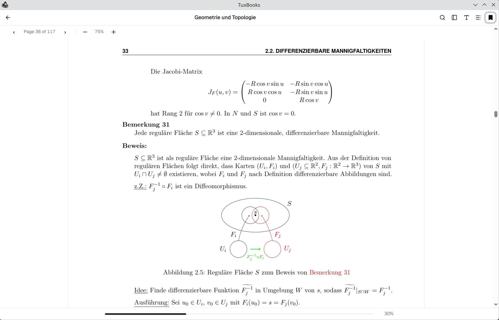

Local-first by design
Books, metadata, and reading progress live in a local SQLite database. No cloud services, no external databases, no network dependencies.
v0.0.1 · in active development
TuxBooks is a local-first, bookshelf-style ebook library and reader for Linux. Point it at a folder of EPUB and PDF files — it indexes your library, remembers where you stopped reading, and stays completely offline.
Download for Linux Build from source
Free software under GPL‑3.0 · Rust + Tauri · React + TypeScript
No accounts, no cloud sync, no telemetry. Your books and reading data never leave your machine.
Books, metadata, and reading progress live in a local SQLite database. No cloud services, no external databases, no network dependencies.
Point it at a folder of EPUB and PDF files. TuxBooks indexes metadata and covers into a searchable library with collections and reading progress.
Continuous scrolling with virtualized page rendering, zoom, mixed page sizes, per-page error recovery, and position persistence.
Reading position is persisted per book and restored when you return — close the app mid-chapter, come back to the same spot.
Built with Tauri 2 and a Rust core: a small, fast binary that behaves like a real desktop application on Linux, not a web page in a box.
Strict TypeScript, a layered Rust domain, and a real test pyramid — unit, property, frontend, and headless real-app desktop E2E tests.
Drop PNGs into site/img/ with these names and they appear here
automatically.


Incremental development: one coherent subsystem at a time, each milestone shipped with tests. The full plan lives in ROADMAP.md.
Tauri 2 app, Rust domain/service/repository layers, SQLite persistence, local library import, and a production PDF reader — continuous scrolling, virtualized rendering, zoom, and reading-position persistence — backed by unit, property, frontend, and headless desktop E2E tests.
A real EPUB reading experience on the vendored foliate-js engine: chapter rendering, table of contents, navigation, configurable typography and themes, and stable CFI document locators so you reopen the book exactly where you stopped — pinned by EPUB unit, frontend, and desktop E2E tests.
Virtualized page thumbnails and a clickable outline, so large PDFs can be navigated without endless scrolling.
The library stays in sync with your files — additions, moves, renames, deletions. Missing books can be reconnected without losing metadata or progress.
Cached cover art for every book — extracted from EPUBs, rendered from PDF first pages — for a polished bookshelf.
Library-wide search with a global shortcut, plus in-book text search for EPUB and PDF.
Persistent reading annotations for both formats — bookmarks, color highlights, and attached notes stored as stable document locators, not UI coordinates — created in the reader and revisited from the navigation drawer.
Correct messy metadata with library-level overrides while source files stay untouched — multiple authors, subjects, and series as first-class rows, plus reset-to-source for every field.
A shared ReaderShell for position, progress, navigation, and persistence, with dedicated EPUB and PDF adapters underneath.
Stress-tested reader interactions, bounded memory, and safe async lifecycle under rapid navigation.
Real collections, In Progress / Finished sections, file & folder import, file-manager reveal, and window-state restore — no dead ends left.
Linux packaging (AppImage / deb), release automation, and distributable artifacts built by CI.
One subsystem at a time · Tests are part of the feature · Real desktop E2E · Local-first · No fake persistence